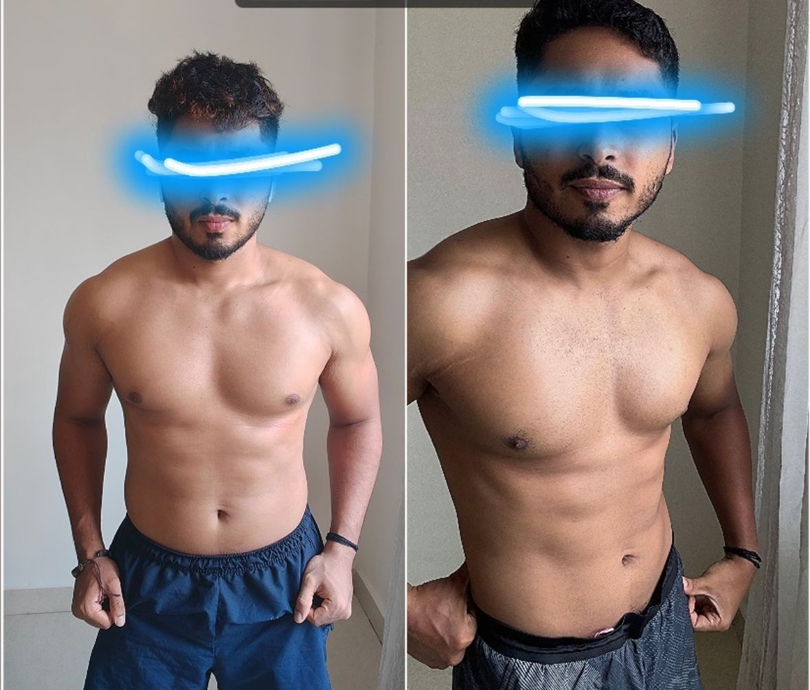

06
Week
From 0 Pull-Ups to 10 Strict Pull-Ups
Started with scapular pulls + negatives. Built strength with strict progressions, tempo control, and weekly volume planning. Result: clean, full-range pull-ups—no kipping.